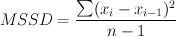
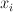

Formulas > Descriptive Statistics > MSSD
MSSD stands for Mean Squared Successive Differences. It is computed using the following formula:

where
 = the i
th
data value in the set
= the number of data values in set

 = the number of data values in set
= the number of data values in set
= the number of data values in set
= the number of data values in set